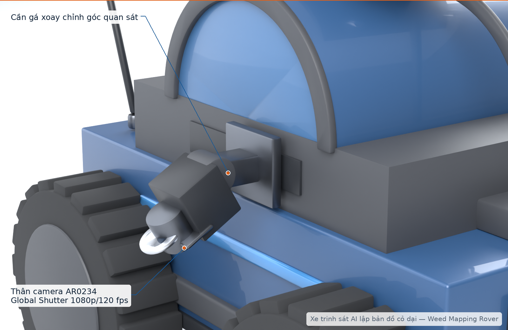

TRẢI NGHIỆM THỰC TẾ TRÊN ĐỒNG RUỘNG (FARMER USER JOURNEY)
QUY TRÌNH NGƯỜI NÔNG DÂN SỬ DỤNG XE TRINH SÁT
4 bước đơn giản khép kín: Thả xe đầu bờ ➔ Xe tự quét luống ➔ Xem bản đồ nhiệt trên đt ➔ Đi thẳng tới nhổ cỏ
Nông Nghiệp Chính Xác 4.0

BƯỚC 1
1. Đặt Xe Ở Đầu Bờ Ruộng
Bấm 1 nút khởi động trên điện thoại
XE TỰ CHẠY THEO LUỐNG
Rãnh luống hẹp 60 - 80cm

Camera Kép 120fps
Chụp sát gốc không rung
GPS RTK Centimet
Khóa tọa độ sai số 2cm
BƯỚC 2
2. Xe Tự Quét & Phát Hiện Sâu Cỏ
AI Jetson Orin nhận diện cỏ dại, nấm bệnh
GỬI BẢN ĐỒ VỀ ĐIỆN THOẠI
Sóng 4G / LoRa
👨🌾
Bác Nông Dân
Không phải lội rẫy dò tìm
Xử Lý Cục Bộ Ngay Ổ Cỏ
• Nhổ tay đúng khóm cỏ dại
• Tiết kiệm 70% - 80% thuốc BVTV
• Không phun xịt tràn lan độc hại
• Tiết kiệm 70% - 80% thuốc BVTV
• Không phun xịt tràn lan độc hại
BƯỚC 4
4. Đi Thẳng Tới Đúng Chỗ Để Xử Lý
Chỉ mất vài bước chân, xử lý dứt điểm từng ổ cỏ
CHỈ ĐƯỜNG LA BÀN GPS
"Bác bước dọc Luống 2 khoảng 35 bước chân là tới ngay ổ cỏ"
📱 MicroScout App
● 3 Ổ Cỏ

1
2
Bản Đồ Nhiệt Vệ Tinh Google
🔴 Ổ Cỏ Lồng Vực (L.2)
96.2%
Ảnh Camera Chụp Thực Tế
BƯỚC 3
3. Điện Thoại Báo Điểm Nóng
Hiện quầng nhiệt đỏ rực kèm ảnh bằng chứng
Giảm 80% công lội rẫy
Tiết kiệm 75% chi phí thuốc trừ cỏ
Bảo vệ sức khỏe nông dân
Dự án MicroScout-AI • VietFuture 2026